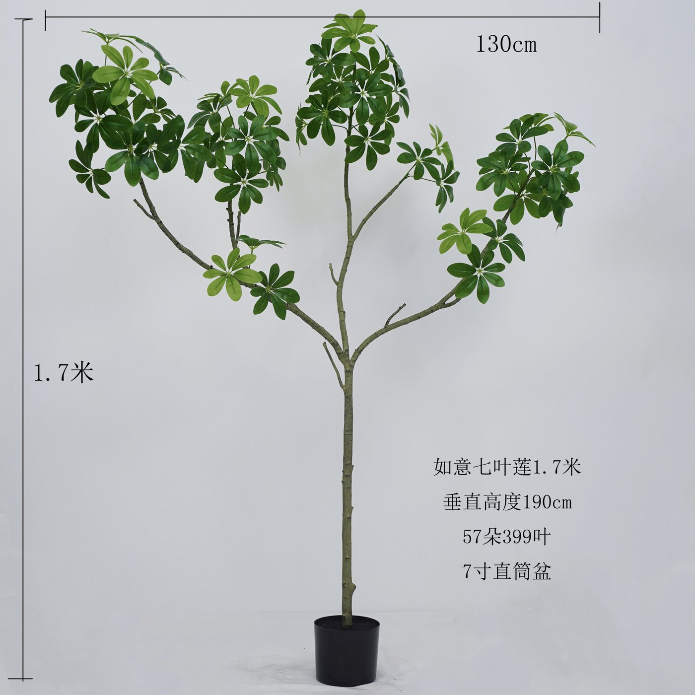
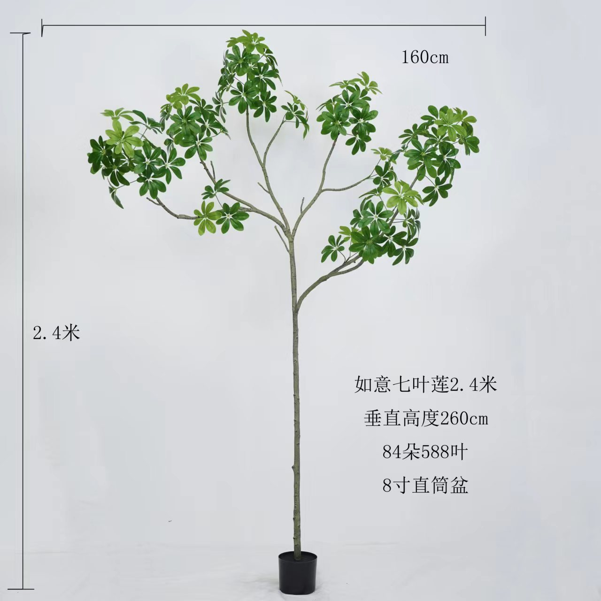

Foliage & Shrubs
Ruyi Seven-Leaf Schefflera
Ruyi Seven-Leaf Schefflera is a versatile greenery piece for retail displays, offices, and mixed plantings. The photographs show examples in heights from 170–240 cm. This is a factory photograph of the actual product; exact dimensions, packing, MOQ, lead time and price are confirmed by the seller on inquiry.
Opens your email application; sending happens there.
Product information
Ruyi Seven-Leaf Schefflera is a versatile greenery piece for retail displays, offices, and mixed plantings. The photographs show examples in heights from 170–240 cm. This is a factory photograph of the actual product; exact dimensions, packing, MOQ, lead time and price are confirmed by the seller on inquiry.
Specifications
| Heights (from photos) | 170–240 cm |
|---|---|
| Product code | LC-N054 |